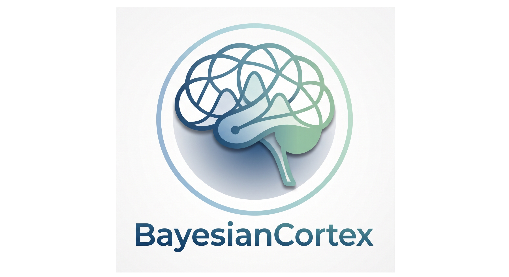
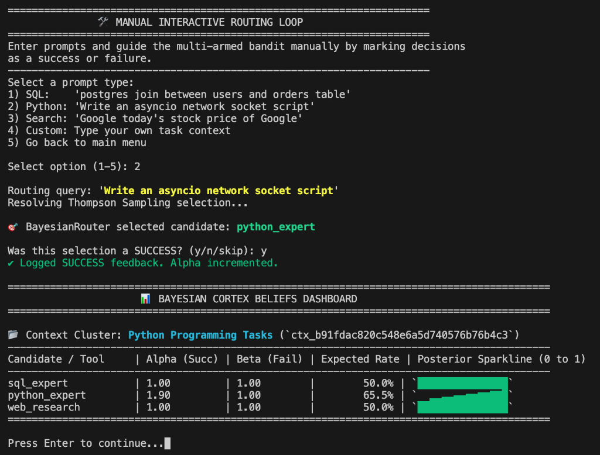
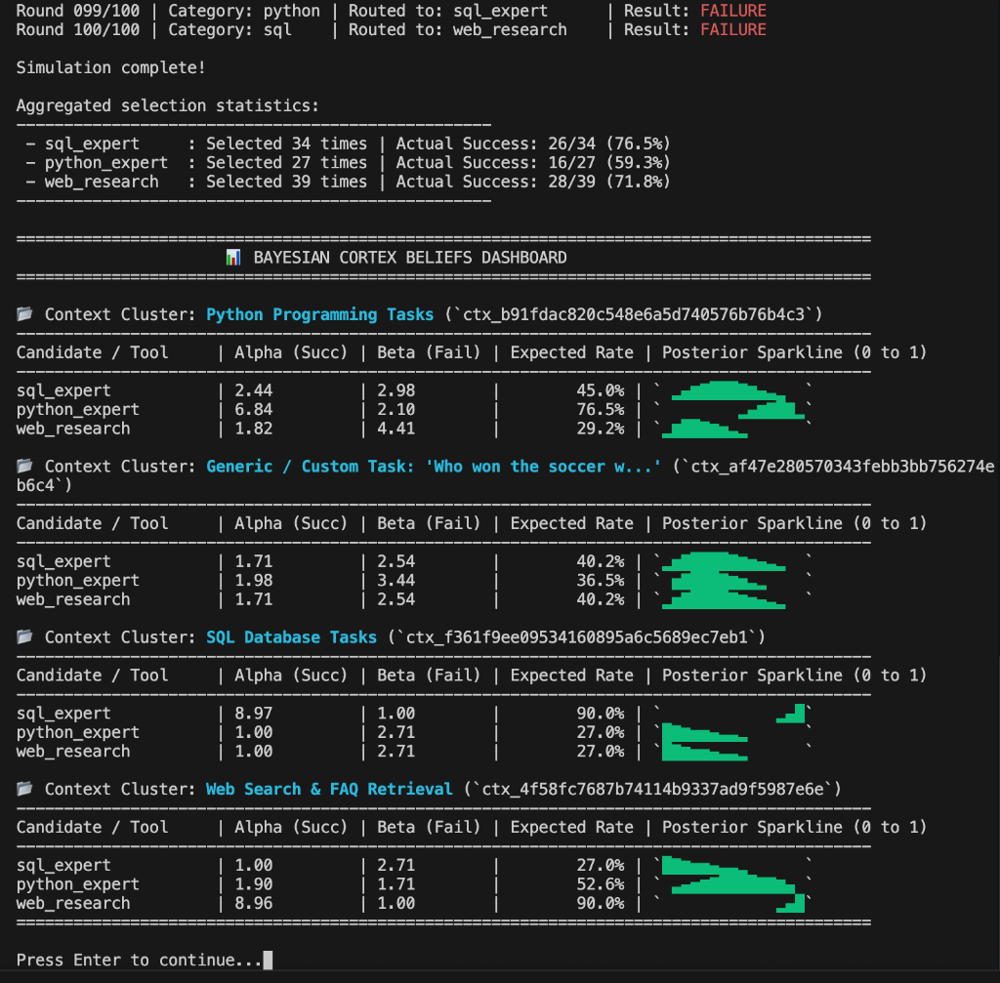

AI agents are often built with rigid utility belts. When they are tasked with retrieving information or executing a command, they guess which tool or prompt to use based on static heuristics or expensive LLM-based reasoning. They do not learn from their mistakes, and they fall apart when downstream services fail silently or prompt templates begin to hallucinate. This is a massive engineering bottleneck in production environments.
I built BayesianCortex to resolve this bottleneck. BayesianCortex is a Python middleware library that treats routing as a Contextual Multi-Armed Bandit problem. By leveraging Thompson Sampling with closed-form conjugate updates and Linear/Hybrid Bandits, it dynamically routes queries to the most successful candidates, self-heals in real time, and operates locally with negligible latency.
The Routing Dilemma
In production-grade AI engineering, routing is the gateway to execution. Developers generally choose between three patterns:
- The Cloud LLM Router: The system passes the user prompt and descriptions of all tools to a frontier model (like Claude or GPT) to select the candidate. This is slow, expensive, and subject to recursive "self-correction loops" that burn through tokens when a tool fails.
- Semantic Vector Search: The system embeds the user prompt and queries a vector database for the candidate with the closest cosine similarity. This approach is completely blind to performance. If a tool is a perfect semantic match but its API is down, the search engine will lock the agent into an infinite failure loop.
- BayesianCortex Router: The system embeds the user prompt, runs it through a contextual bandit math engine, and computes the candidate with the highest expected success rate based on real-world execution telemetry.
By decoupling the routing decision from cloud LLMs and linking it directly to execution outcomes, BayesianCortex optimizes what I call The Golden Triad of agent interactions:
- Tools (The Hands): Learning which specific action successfully retrieves data without throwing errors.
- Skills (The Mind): Tracking which specialized prompt template gets the best results, letting the agent shift away from underperforming instructions.
- Memory (The Records): Figuring out which document vault or retrieval strategy holds the true answer to a user's question.
The Core Math Engine
To avoid runtime latency, BayesianCortex avoids heavy Markov Chain Monte Carlo (MCMC) sampling. Instead, it utilizes exact closed-form updates and supports three mathematical routing modes:
1. Context Clustering Mode (Beta-Binomial Conjugate Pair)
In clustering mode, each candidate is modeled as a Beta distribution representing the belief of its success probability. The default state is initialized with uniform flat priors \(\alpha_i = 1.0, \beta_i = 1.0\), representing total uncertainty. For each routing decision, we sample a success probability from the Beta distribution of each candidate:
$$\theta_i \sim \text{Beta}(\alpha_i, \beta_i)$$
The router then selects the candidate with the highest sampled probability:
$$i^* = \arg\max_{i} \theta_i$$
Once execution is complete, the telemetry hook updates the posterior parameters based on the observed reward (success = 1.0, failure = 0.0):
$$\alpha_i \leftarrow \alpha_i + \text{reward}$$
$$\beta_i \leftarrow \beta_i + (1 - \text{reward})$$
Handling Non-Stationary Environments (Drifting APIs)
If an API starts failing or degrades over time, historical successes should not dominate the routing indefinitely. BayesianCortex applies an exponential decay factor \(\gamma \in (0, 1]\) on historical updates prior to adding new rewards:
$$\alpha_t = \max(1.0, \gamma\alpha_{t-1} + \text{reward})$$
$$\beta_t = \max(1.0, \gamma\beta_{t-1} + (1 - \text{reward}))$$
Both parameters are strictly clamped to a lower-bound of 1.0 to prevent the distribution from becoming U-shaped or bimodal, which stabilizes Thompson Sampling exploration.
2. Linear Contextual Bandits Mode (LinTS & LinUCB)
Instead of partitioning tasks into discrete clusters, the linear modes learn a linear relationship between the continuous task embedding space and the expected reward. Let the text embedding vector be \(x \in \mathbb{R}^d\). We augment it with a bias term \(x' = [x, 1.0]\) to learn prior success rates as linear offsets.
- Linear Thompson Sampling (LinTS): Models the success probability parameter \(\theta_a\) for candidate \(a\) as a linear combination of features, \(\theta_a = x'^T w_a\), where weights \(w_a\) are sampled from the posterior distribution \(\mathcal{N}(\hat{w}_a, v^2 B_a^{-1})\).
- Linear Upper Confidence Bound (LinUCB): Selects the candidate maximizing the upper confidence bound of the expected reward:
$$a^* = \arg\max_a \left(x'^T \hat{w}_a + \alpha \sqrt{x'^T B_a^{-1} x'}\right)$$
where \(\hat{w}_a\) is the ridge regression estimate, \(B_a\) is the precision matrix, and \(\alpha\) is the exploration weight.
I implemented a **Diagonal Covariance Approximation** option to avoid full matrix inversion (reducing complexity from \(O(d^3)\) to \(O(d)\)), which is highly recommended for performance-critical systems.
3. Shared-Parameter (Hybrid) Contextual Bandits
Disjoint bandits struggle when new candidates are added because they have no historical data (the cold-start problem). To resolve this, BayesianCortex implements a Shared-Parameter (Hybrid) mode. It maps both the task context \(x_c\) and the candidate's embedding \(t_a\) into a single joint feature space, \(x_{\text{augmented}} = [x_c, t_a, 1.0]\), and maintains a single unified weight vector \(w \in \mathbb{R}^{d_{ctx} + d_{candidate} + 1}\) across all candidates. This allows the system to generalize success probabilities across similar candidates, even if one is brand new.
System Architecture & Production Engineering
Building a mathematical routing engine is only half the battle; it must survive the realities of high-throughput, concurrent production environments. I engineered several core architectural features to address these challenges:
⚡ High-Concurrency SQLite Storage
SQLite is the default local storage backend. To prevent database locks during parallel executions, the storage engine implements:
- Write-Ahead Logging (WAL): dramatically improves read/write concurrency.
- Connection Pooling: the asynchronous engine manages a connection pool to avoid connection establishment overhead.
- Exponential Backoff with Jitter: database write contentions are automatically retried with randomized backoff to ensure safety under concurrent load.
- Persistent Vector Indexing: utilizes the
sqlite-vecextension to support native database-level cosine-distance vector matches, avoiding loading all context vectors into memory.
🛡️ HMAC-SHA256 Signed Trace IDs
In decoupled setups where a client UI gathers user feedback (like a thumbs up/down button) and reports it back to the backend, there is a risk of client-side reward poisoning. BayesianCortex signs all routing trace IDs with an HMAC-SHA256 signature. The backend verifies the signature before updating parameters, ensuring telemetry data remains untampered.
🧠 Automated RAG Success Metrics
Retrieval-Augmented Generation (RAG) fails silently. Rather than throwing errors, it returns irrelevant text chunks or hallucinations. To automate feedback, BayesianCortex features helper functions that run citation checks and compute token-overlap faithfulness metrics to automatically determine success and update the bandit prior.
Let's See Some Code
BayesianCortex is designed to be drop-in middleware. Below is an example of routing tools with synchronous and asynchronous APIs, including automatic evaluation of RAG responses.
from bayesian_cortex import BayesianRouter
from bayesian_cortex.embeddings import GeminiEmbedder
from bayesian_cortex import evaluate_rag_success
# 1. Initialize the router with local SQLite backend
embedder = GeminiEmbedder(model_name="models/text-embedding-004")
router = BayesianRouter(
storage_backend="sqlite",
storage_path="bayes_cache.db",
embedder=embedder,
decay_factor=0.95
)
# 2. Candidate Routing (Tools)
chosen_tool = router.route(
context_key="Fetch user profile from PostgreSQL",
candidates=["sql_tool", "vector_tool", "graphql_tool"]
)
print(f"Routed to candidate: {chosen_tool}")
# Provide feedback after execution
router.feedback(
context_key="Fetch user profile from PostgreSQL",
candidate=chosen_tool,
success=True
)
# 3. RAG Routing (Memory) with automatic evaluation
chosen_kb = router.route(
context_key="What is our policy on parental leave rollover?",
candidates=["rag/hr_handbook", "rag/benefits_v2_draft", "rag/general_faq"]
)
retrieved_chunks = ["Parental leave rollover allows up to 5 days rollover..."]
generated_response = "Our policy allows you to roll over up to 5 days of parental leave."
# Automatically evaluate response quality
success = evaluate_rag_success(
response=generated_response,
source_chunks=retrieved_chunks,
faithfulness_threshold=0.5
)
router.feedback(
context_key="What is our policy on parental leave rollover?",
candidate=chosen_kb,
success=success
)
For async web applications (like FastAPI or FastMCP), the router offers fully async methods:
import asyncio
from bayesian_cortex import AsyncBayesianRouter
from bayesian_cortex.embeddings import GeminiEmbedder
async def main():
embedder = GeminiEmbedder(model_name="models/text-embedding-004")
router = AsyncBayesianRouter(
storage_backend="sqlite",
storage_path="bayes_cache.db",
embedder=embedder,
decay_factor=0.95
)
# Async Route & Feedback
chosen_skill = await router.aroute(
context_key="Refactor this legacy asyncio network loop",
candidates=["skills/async-expert", "skills/naive-coder", "skills/strict-defensive"]
)
# Executing logic...
await router.afeedback(
context_key="Refactor this legacy asyncio network loop",
candidate=chosen_skill,
success=True
)
asyncio.run(main())
Visualizing Drifting Failure Rates
I built an interactive simulation script to demonstrate how Thompson Sampling adapts. In this simulation, different tools have fluctuating failure rates. The bandit quickly identifies failures and routes around them.

The Model Context Protocol (FastMCP) Server
To make BayesianCortex accessible to desktop agents like Claude Code, Cursor, or Claude Desktop, I packaged it with an out-of-the-box Model Context Protocol (MCP) server. MCP endpoints can consume substantial system context, so I implemented flags to selectively enable or disable endpoints to prevent token bloat.

The dashboard renders Unicode sparklines and Beta stats PDF SVG charts dynamically, showing the shapes of the probability distributions in real time as the agent executes actions and logs feedback.
Conclusion
BayesianCortex turns agentic routing from a static heuristic into a self-optimizing middleware layer. It saves token costs, prevents infinite retry loops, and ensures that your agents learn from failures in production. The repository is open-source, and I invite you to check it out on my GitHub page!